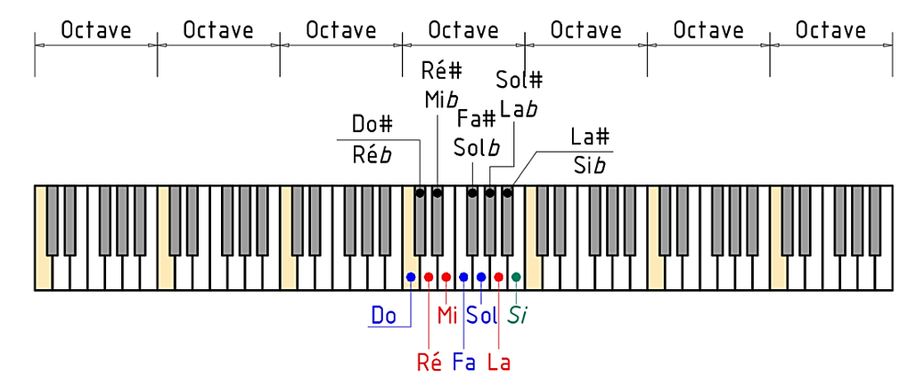
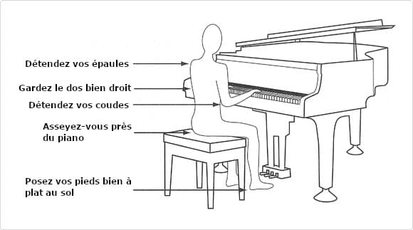

1. Le Clavier
Un piano standard possède 88 touches :
- Touches blanches: notes naturelles ( Do, Ré, Mi, Fa, Sol, La, Si )
- Touches Noires: dièses ( # ) et Bémols ( ♭ )
Le clavier est organisé en motifs répétitifs de 12 notes


Le piano est un instrument de musique à clavier très populaire dans le monde. Il a été inventé au début de XVIIIe siècle par un facteur d'instrument Italien nommé Bartolomeo Cristofori.
Avant le piano, on utilisait des instrument comme le clavecin, mais ceux-ci ne permettaient pas de varier l'intensité du son. Le piano a apporté une grande innovation: il permet de jouer doucement ou fort selon la pression des doigts.
Au fil du temps, le piano est devenu un instrument central dans plusieurs styles musicaux : musique classique, jazz, gospel, pop, et bien d'autres.
Un piano standard possède 88 touches :
Le clavier est organisé en motifs répétitifs de 12 notes



